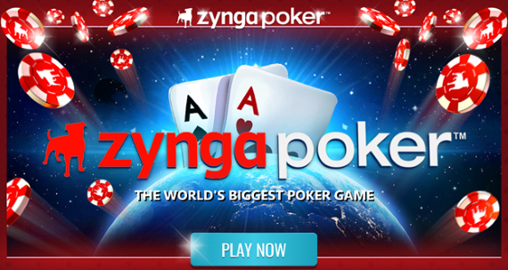

Zynga Poker: Don't worry its free and money is fake.
March 8, 2021 This game is often enjoyed the most if you are trying to learn how to play Texas Hold’em Poker for the first time without the risk of losing real money. It is a free to play game that can be enjoyed on your computer or on any other smart-phone device. The lobby to this game is often full of players that ranges from beginners to experts. As a beginner in this game, it is recommended to start at the low-end tables to observe the action from the other players without losing too many chips. In non-tournament games, the player can activate the hand strength indicator which teaches people how their hand plays with the existing cards on the table. Overtime, this will make Texas Hold’em much easier to understand in terms of terminology, betting process, and strength of the cards.
For first time players, you are going to lose a lot at these tables, but the online community is very active where some enjoy helping teach new players. Zynga Poker has the best layout making the game to be user-friendly and making sure it is easy to obtain free chips per every few hours. This way, if any player that matter was to lose every chip, they do not need to worry about spending real money as way to reobtain chips. After a few hours goes by, the player is granted with a free slot machine spin to win additional chips. Bankrupted or not, this free slot machine method is always available to anyone after a certain amount of time.
Zynga Poker still has a lot to offer to the experience players by having daily challenges, real-time leader league boards, and tournaments. Being a successful Texas Hold’em poker player on this platform will grant you customizable avatar prizes, trophies, bragging rights, and chips rewards. The buy in to these tournaments are set high (ex: $500M to $20B) to cause people to truly bet with caution. In a tournament people are playing like it is real money due to the time and effort it took them to increase their chip count to have a spot at the big table. All around it is great free-to-play Texas Hold’em game that does not require any personal funds to be added into the game. Now there is an option to add funds to gain a crazy amount of chips, but thankfully that concept is not pushed or forced onto the consumer. I would never pay money for the additional chips because that would be cheating, and causing it to feel not as rewarding.